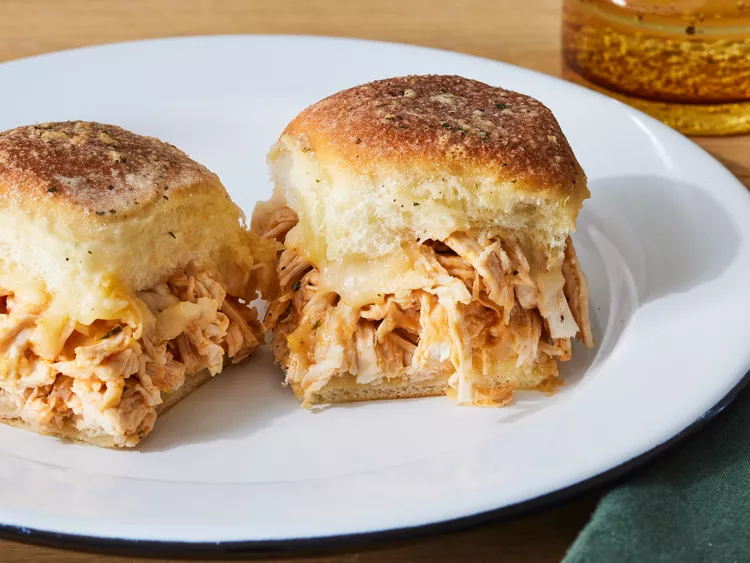

Buffalo Chicken Sliders

Description
Ingredients
- cooking spray
- 1 (12 ounce) package Hawaiian sweet dinner rolls
(such as King’s Hawaiian®)
- 6 ounces Monterey Jack cheese, shredded (about 1 1/2 cups), divided
- 3 cups finely shredded cooked chicken breast, warmed
- 1/4 cup cayenne pepper hot sauce (such as Frank’s RedHot®)
- 1/4 cup ranch dressing
- 1 (1 ounce) envelope ranch dressing mix, divided
- 2 tablespoons unsalted butter, melted
Directions
- Preheat oven to 350 degrees F (175 degrees C).
Gather all ingredients.
- Line a large-rimmed baking sheet with aluminum foil;
lightly coat with cooking spray. Using a serrated bread knife,
cut rolls in half horizontally, keeping top halves and bottom
halves intact; place bottom half of rolls, cut-side up, on prepared
baking sheet.
- Sprinkle 3/4 cup of the cheese evenly over bottom half of rolls.
- Stir together warmed chicken, hot sauce, ranch dressing,
and 3 tablespoons of the ranch dressing mix in a large bowl
until evenly coated.
- Top bottom half of rolls evenly with chicken mixture;
sprinkle with remaining 3/4 cup cheese.
- Place top half of rolls over cheese. Brush tops and
sides of rolls with melted butter. Sprinkle tops of
rolls evenly with remaining 1/2 tablespoon ranch dressing mix.
- Bake in preheated oven until cheese is melted, tops of rolls
are golden brown, and chicken mixture is heated through, about
10 minutes. Remove from oven, cut into 12 sliders and serve immediately.